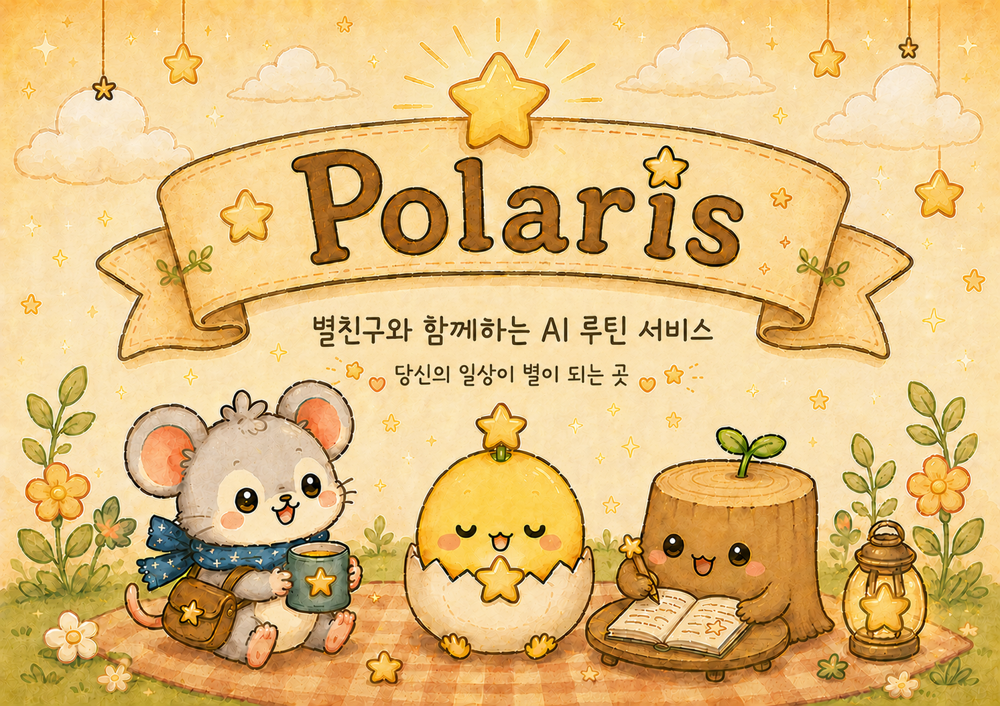
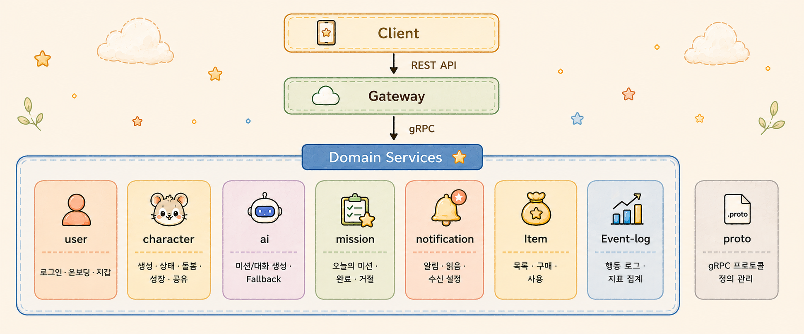
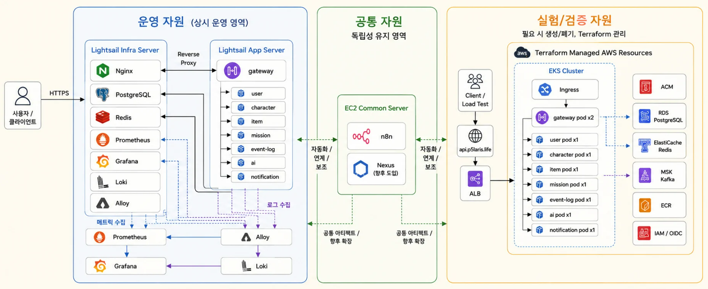
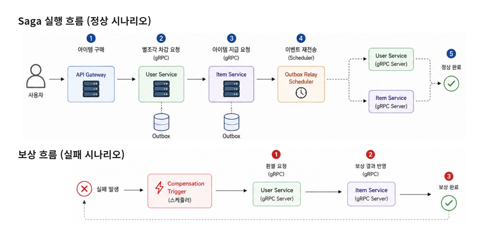
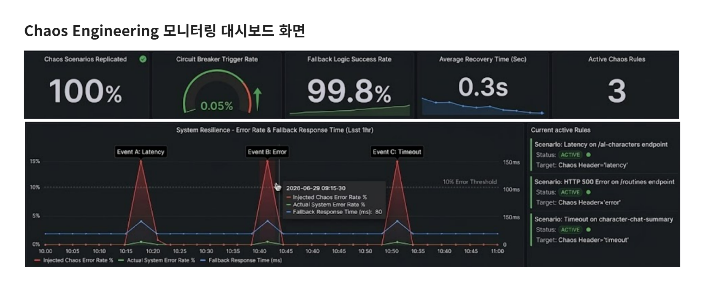
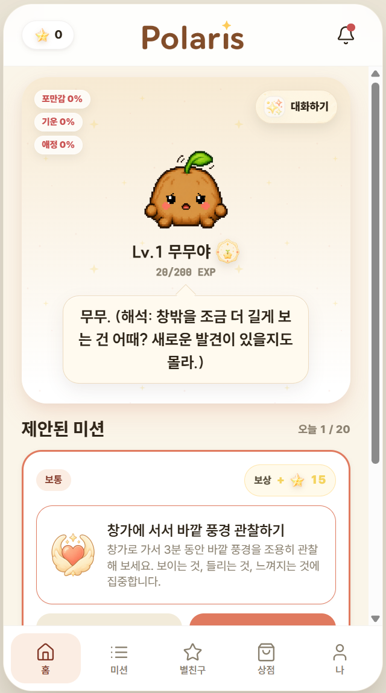
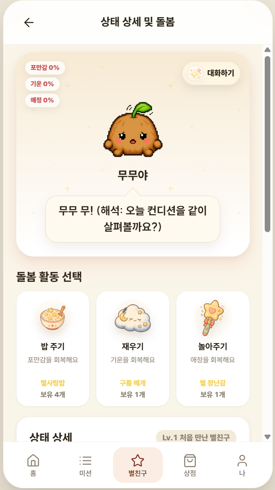
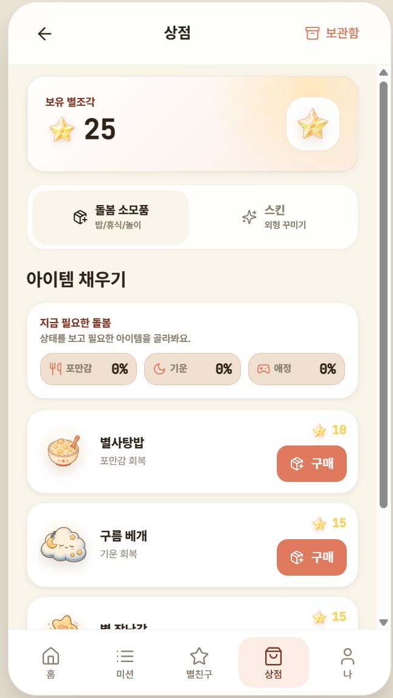

별친구와 함께하는 AI 루틴 서비스

사용자가 AI 캐릭터와 함께 일상 루틴을 즐겁게 생성·수행하고, 보상으로 획득한 별조각을 활용해 다양한 아이템을 구매하며 꾸준한 습관 형성을 돕는 서비스를 기획했습니다. 특히 마이크로서비스 간의 통신이 잦은 구조에서, 사용자가 재화를 잃지 않고 언제나 신뢰할 수 있는 안정적인 데이터 정합성 환경을 구축하는 것이 핵심 기술적 목표였습니다.
Java / Spring Boot Microservices Architecture gRPC Kubernetes Saga Pattern Outbox Pattern Event Driven Architecture


운영 로그 모니터링 과정에서 item 서비스와 user 서비스 간 통신 실패로 인해 별조각은 차감되었지만 아이템이 지급되지 않는 데이터 불일치를 일 평균 5건 확인했습니다. 사용자가 재화를 잃는 치명적인 문제를 해결하기 위해 분산 트랜잭션 복구 체계를 설계했습니다.
초기에는 Kafka 기반 Choreography Saga를 고려했으나, 6주라는 짧은 프로젝트 기간과 8개 MSA 서비스 환경에서 Kafka 클러스터까지 직접 운영하는 것은 과도한 복잡도를 초래한다고 판단했습니다. 대신 기존에 설계해둔 Outbox 테이블을 활용하여 백그라운드 스케줄러가 gRPC 이벤트를 재전송하는 방식으로 구현해, 인프라 운영 비용을 획기적으로 줄이면서도 결과적 정합성(Eventual Consistency)을 완벽히 확보했습니다.
분산 트랜잭션 불일치 건수 일 평균 5건 → 0건으로 개선하여 사용자 재화 손실 문제를 완전히 제거했습니다. 사용자는 서비스 장애 상황에서도 아이템 미지급 없이 안전하게 상점을 이용할 수 있습니다.

사용자의 루틴 생성 및 캐릭터 대화 기능은 외부 AI 서버에 절대적으로 의존하고 있었습니다. 하지만 실제 AI 서버 장애 상황에서는 우리의 예외 처리 로직을 충분히 검증하기 어려웠고, 장애 시 사용자가 서비스 이용에 실패할 잠재적 리스크가 컸습니다.
실제 AI 서버를 다운시켜가며 장애를 반복 재현하기 어렵다고 판단, Mock 서버 기반의 샌드박스 테스트 환경을 별도로 구축했습니다. 더 나아가 운영 환경과 동일한 조건에서 장애 시나리오를 검증하기 위해 이를 Kubernetes 환경에 배포하여 테스트 재현성을 100% 확보했습니다.
AI 서버 장애 상황에 대한 테스트를 완벽히 자동화하였고, 배포 전 예외 처리 로직을 사전 검증하는 프로세스를 확립했습니다. 덕분에 실제 AI 서버 장애 상황에서도 사용자가 루틴 생성 기능을 안정적으로 이용할 수 있는 강력한 서비스 복원력(Resiliency)을 확보했습니다.

API 응답 시간 측정 결과, 부가적인 이벤트 로그 수집 모듈의 동기 호출 탓에 핵심 기능인 아이템 구매 API의 평균 응답 시간이 320ms 수준까지 지연되는 성능 저하를 확인했습니다. 또한 이벤트 로그 서비스 장애 발생 시 구매, 로그인 등 메인 핵심 기능까지 연쇄적으로 실패(Cascading Failure)하는 강결합 구조적 문제가 존재했습니다.
초기에는 Kafka 기반 이벤트 처리도 검토했으나, 프로젝트 운영 복잡도를 고려해 Spring의 ApplicationEventPublisher와 @Async 기반의 로컬 비동기 구조를 선택했습니다. 부가적인 인프라 추가 없이 코드 수준에서 도메인 로직과 이벤트 로깅 로직을 완벽히 분리해 내었습니다.
메인 스레드 블로킹 문제를 해결하여 아이템 구매 API 응답 시간을 320ms에서 180ms로 44% 극적으로 단축시켰으며, 이벤트 로그 서비스 장애 시 핵심 메인 서비스가 실패하는 현상을 완전히 방어(실패율 0%)해냈습니다.


